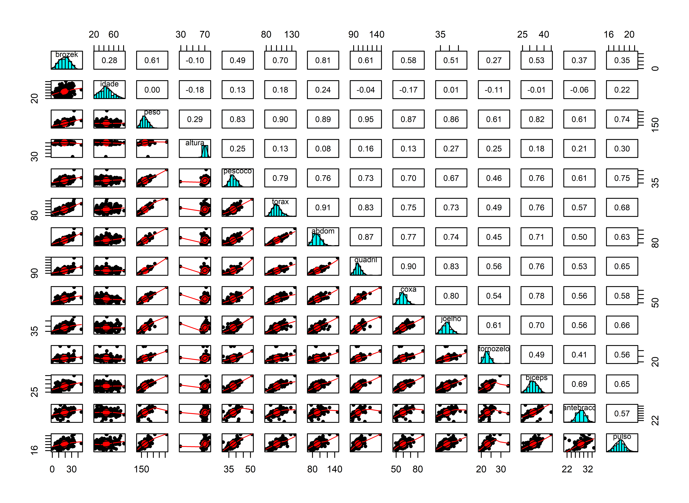
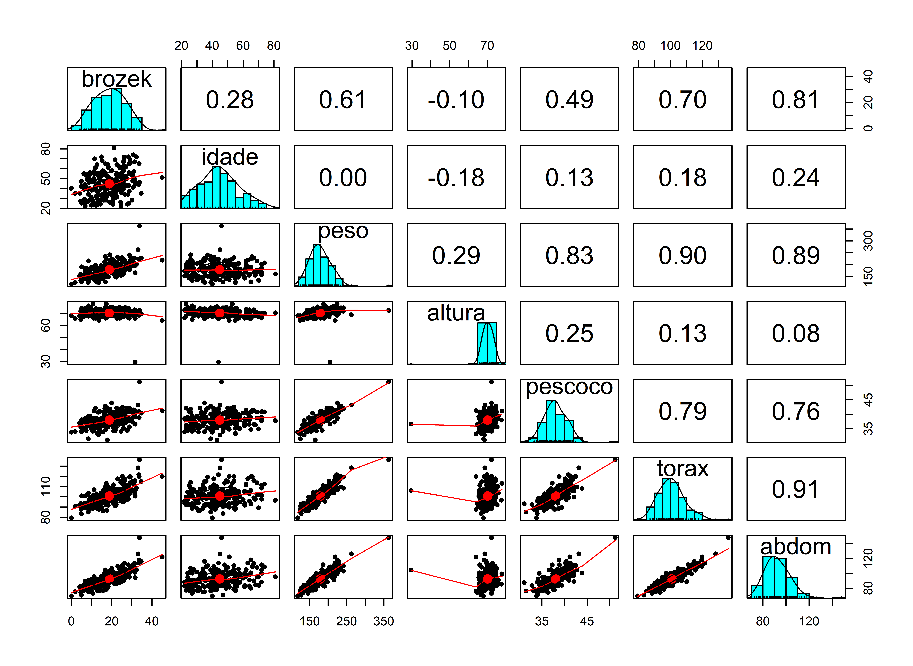
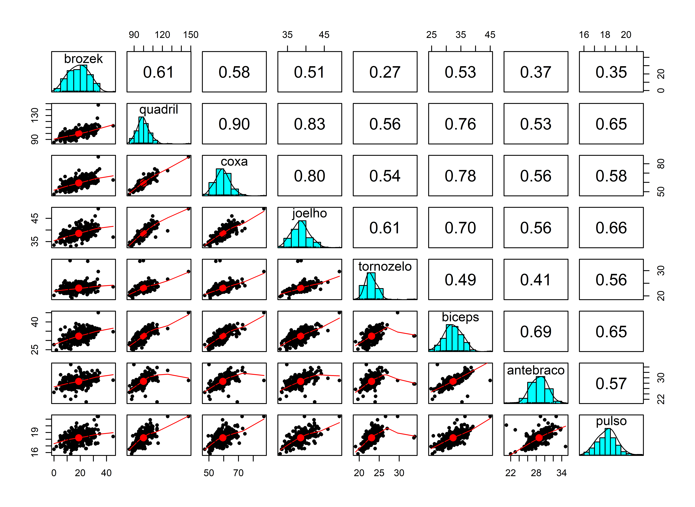
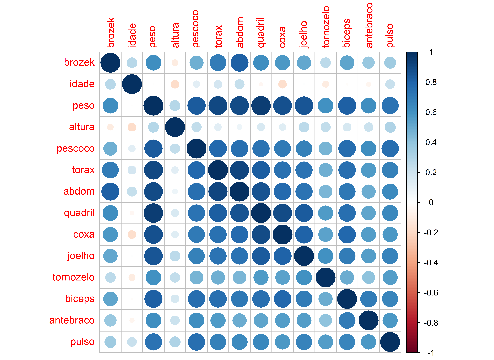
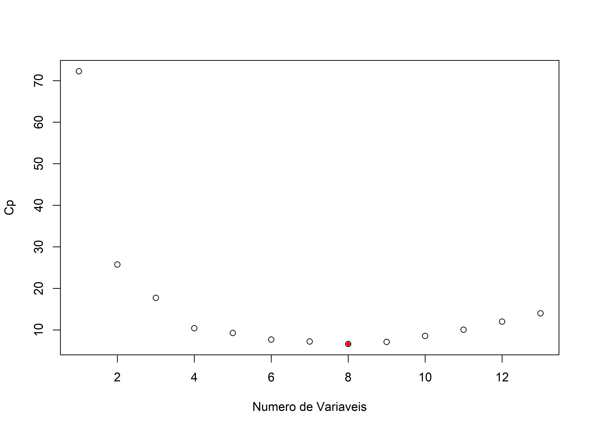
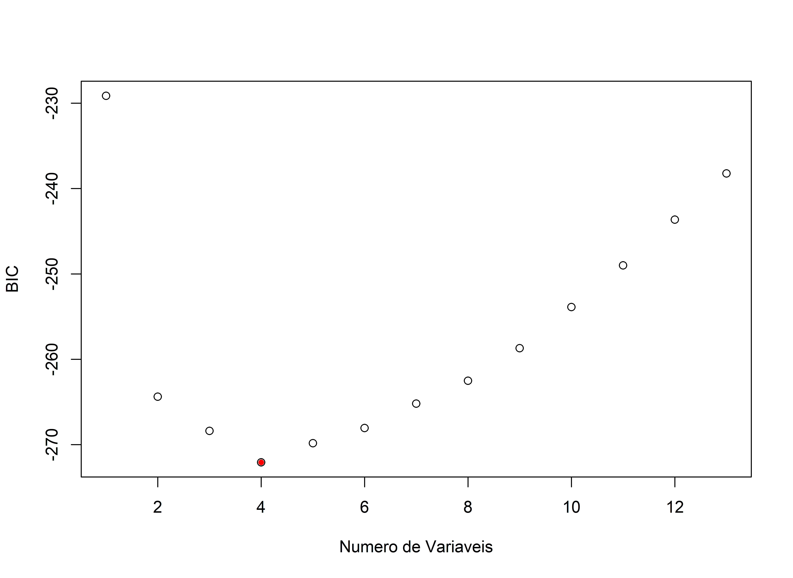
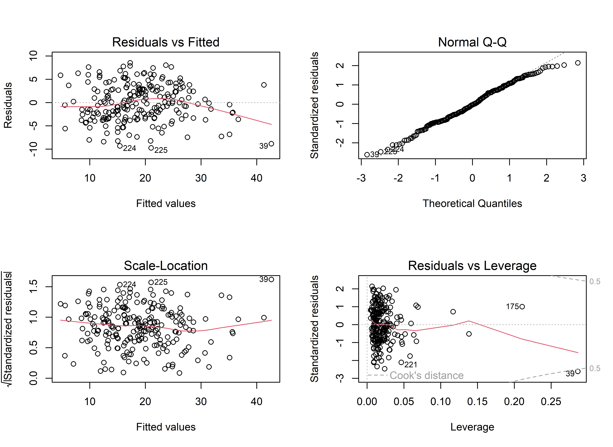
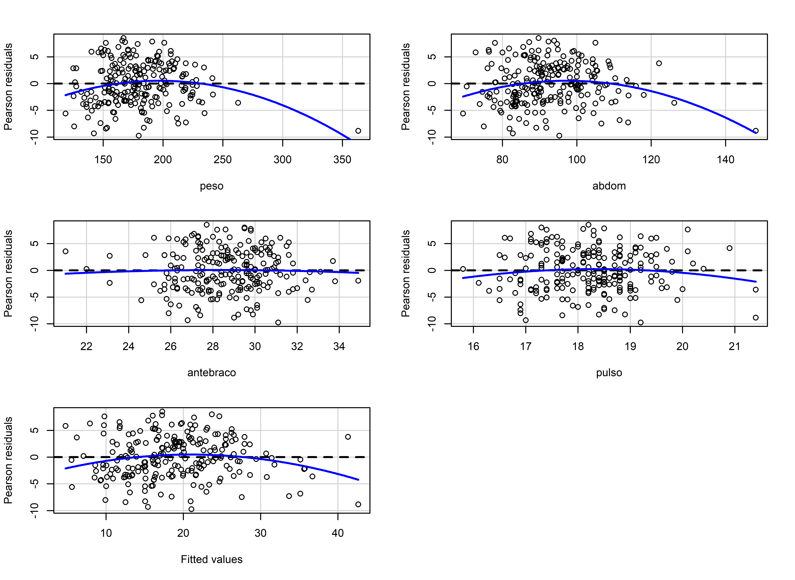
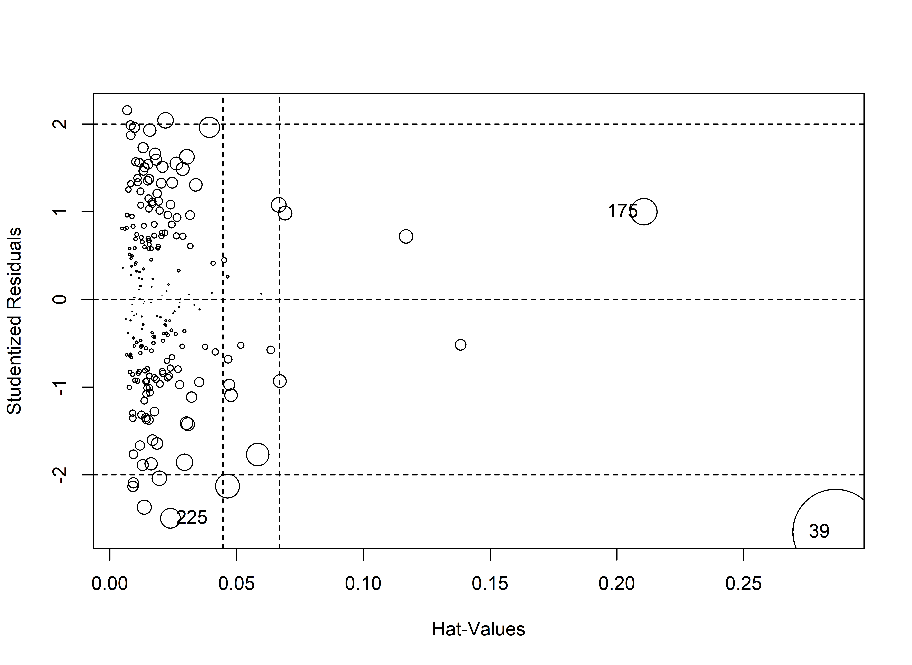

library(tidyverse)
# parametros para imagens
knitr::opts_chunk$set(
fig.width = 8,
fig.asp = 0.73,
fig.retina = 3,
dpi = 300,
out.width = "90%"
)Regressão Múltipla e Seleção de Modelos
Carregando Bibliotecas
library(faraway)
library(leaps) # Metodos de selecaoCarregando os dados
Neste exercíco vamos ajustar um modelo de regressão linear múltipla ao conjunto de dados fat da biblioteca faraway.
- Com o conjunto de dados de gordura (fat) na biblioteca (faraway), queremos ajustar um modelo de regressão linear múltipla para prever o percentual de gordura corporal (y = brozek) usando diversas variáveis disponíveis, com exceção de:
- siri (outra forma de cálculo do % de gordura corporal)
- densidade (é usada nas fórmulas brozek e siri)
- livre (é computada usando fórmula brozek)
- adipos (é calculada a partir do peso e da altura)
Vamos criar um conjunto de treino (90%) e outro de teste (10%)
A partir do conjunto de dados você deverá usar três métodos de seleção de variáveis explicativas:
- O melhor subconjunto (bestsubset)
- Seleção passo a passo a frente (forward selection)
- Seleção passo a passo para trás (backward selection)
Para cada método vamos ajustar o modelo usando o lm() com as variáveis selecionadas. Compare os resultados dos três métodos e escreva suas conclusões
Por último vamo avaliar os resíduos do modelo
library(faraway)
data("fat")
gordura <- fat
str(gordura)'data.frame': 252 obs. of 18 variables:
$ brozek : num 12.6 6.9 24.6 10.9 27.8 20.6 19 12.8 5.1 12 ...
$ siri : num 12.3 6.1 25.3 10.4 28.7 20.9 19.2 12.4 4.1 11.7 ...
$ density: num 1.07 1.09 1.04 1.08 1.03 ...
$ age : int 23 22 22 26 24 24 26 25 25 23 ...
$ weight : num 154 173 154 185 184 ...
$ height : num 67.8 72.2 66.2 72.2 71.2 ...
$ adipos : num 23.7 23.4 24.7 24.9 25.6 26.5 26.2 23.6 24.6 25.8 ...
$ free : num 135 161 116 165 133 ...
$ neck : num 36.2 38.5 34 37.4 34.4 39 36.4 37.8 38.1 42.1 ...
$ chest : num 93.1 93.6 95.8 101.8 97.3 ...
$ abdom : num 85.2 83 87.9 86.4 100 94.4 90.7 88.5 82.5 88.6 ...
$ hip : num 94.5 98.7 99.2 101.2 101.9 ...
$ thigh : num 59 58.7 59.6 60.1 63.2 66 58.4 60 62.9 63.1 ...
$ knee : num 37.3 37.3 38.9 37.3 42.2 42 38.3 39.4 38.3 41.7 ...
$ ankle : num 21.9 23.4 24 22.8 24 25.6 22.9 23.2 23.8 25 ...
$ biceps : num 32 30.5 28.8 32.4 32.2 35.7 31.9 30.5 35.9 35.6 ...
$ forearm: num 27.4 28.9 25.2 29.4 27.7 30.6 27.8 29 31.1 30 ...
$ wrist : num 17.1 18.2 16.6 18.2 17.7 18.8 17.7 18.8 18.2 19.2 ...Renomeando as variáveis
gordura <- gordura %>% rename(densidade = density, idade = age, peso=weight, altura = height,
livre = free, pescoco = neck, torax = chest, quadril = hip,
coxa = thigh, joelho = knee, tornozelo = ankle, antebraco = forearm,
pulso = wrist) %>%
select(brozek, idade, peso, altura, pescoco, torax, abdom, quadril,
coxa, joelho, tornozelo, biceps,antebraco, pulso)
str(gordura)'data.frame': 252 obs. of 14 variables:
$ brozek : num 12.6 6.9 24.6 10.9 27.8 20.6 19 12.8 5.1 12 ...
$ idade : int 23 22 22 26 24 24 26 25 25 23 ...
$ peso : num 154 173 154 185 184 ...
$ altura : num 67.8 72.2 66.2 72.2 71.2 ...
$ pescoco : num 36.2 38.5 34 37.4 34.4 39 36.4 37.8 38.1 42.1 ...
$ torax : num 93.1 93.6 95.8 101.8 97.3 ...
$ abdom : num 85.2 83 87.9 86.4 100 94.4 90.7 88.5 82.5 88.6 ...
$ quadril : num 94.5 98.7 99.2 101.2 101.9 ...
$ coxa : num 59 58.7 59.6 60.1 63.2 66 58.4 60 62.9 63.1 ...
$ joelho : num 37.3 37.3 38.9 37.3 42.2 42 38.3 39.4 38.3 41.7 ...
$ tornozelo: num 21.9 23.4 24 22.8 24 25.6 22.9 23.2 23.8 25 ...
$ biceps : num 32 30.5 28.8 32.4 32.2 35.7 31.9 30.5 35.9 35.6 ...
$ antebraco: num 27.4 28.9 25.2 29.4 27.7 30.6 27.8 29 31.1 30 ...
$ pulso : num 17.1 18.2 16.6 18.2 17.7 18.8 17.7 18.8 18.2 19.2 ...# Fat
# - brozek: Percentual de gordura corporal usando a equação de Brozek, 457/Densidade - 414,2
# - siri: Percentual de gordura corporal usando a equação de Siri, 495/Densidade - 450
# - densidade: Densidade (gm/$cm^3$)
# - idade: idade (anos)
# - peso: Peso (libras)
# - altura: Altura (polegadas)
# - adipos: Índice de adiposidade = Peso/Altura$^2$ (kg/$m^2$)
# - livre: Peso livre de gordura = (1 - fração de gordura corporal) * Peso, utilizando a fórmula de Brozek (lbs)
# - pescoco: Circunferência do pescoço (cm)
# - torax: Circunferência torácica (cm)
# - abdom: Circunferência do abdômen (cm) no umbigo e nível com a crista ilíaca
# - quadril: Circunferência do quadril (cm)
# - coxa: Circunferência da coxa (cm)
# - joelho: Circunferência do joelho (cm)
# - tornozelo: Circunferência do tornozelo (cm)
# - biceps: Circunferência estendida dos bíceps (cm)
# - antebraco: Circunferência do antebraço (cm)
# - pulso: Circunferência do pulso (cm) Conjunto de teste e treino
library(caret)Carregando pacotes exigidos: lattice
Attaching package: 'lattice'The following object is masked from 'package:faraway':
melanoma
Attaching package: 'caret'The following object is masked from 'package:purrr':
liftset.seed(1234)
y <- gordura$brozek
indice_teste <- createDataPartition(y, times = 1, p = 0.10, list = FALSE)
conj_treino <- gordura %>% slice(-indice_teste)
conj_teste <- gordura %>% slice(indice_teste)
summary(conj_treino) brozek idade peso altura
Min. : 0.00 Min. :22.00 Min. :118.5 Min. :29.50
1st Qu.:12.80 1st Qu.:35.75 1st Qu.:159.0 1st Qu.:68.25
Median :19.00 Median :43.50 Median :177.0 Median :70.25
Mean :18.86 Mean :44.78 Mean :179.1 Mean :70.16
3rd Qu.:24.60 3rd Qu.:53.25 3rd Qu.:196.8 3rd Qu.:72.25
Max. :45.10 Max. :81.00 Max. :363.1 Max. :77.75
pescoco torax abdom quadril
Min. :31.10 Min. : 79.30 Min. : 69.40 Min. : 85.00
1st Qu.:36.40 1st Qu.: 94.83 1st Qu.: 84.58 1st Qu.: 95.58
Median :37.90 Median : 99.75 Median : 90.90 Median : 99.35
Mean :37.99 Mean :100.80 Mean : 92.52 Mean : 99.93
3rd Qu.:39.52 3rd Qu.:105.30 3rd Qu.: 99.72 3rd Qu.:103.28
Max. :51.20 Max. :136.20 Max. :148.10 Max. :147.70
coxa joelho tornozelo biceps
Min. :47.20 Min. :33.00 Min. :19.10 Min. :24.80
1st Qu.:56.00 1st Qu.:36.90 1st Qu.:22.00 1st Qu.:30.30
Median :59.10 Median :38.40 Median :22.85 Median :32.30
Mean :59.45 Mean :38.56 Mean :23.10 Mean :32.34
3rd Qu.:62.35 3rd Qu.:40.00 3rd Qu.:24.00 3rd Qu.:34.40
Max. :87.30 Max. :49.10 Max. :33.90 Max. :45.00
antebraco pulso
Min. :21.00 Min. :15.80
1st Qu.:27.30 1st Qu.:17.60
Median :28.75 Median :18.30
Mean :28.66 Mean :18.22
3rd Qu.:30.00 3rd Qu.:18.80
Max. :34.90 Max. :21.40 str(conj_treino)'data.frame': 224 obs. of 14 variables:
$ brozek : num 12.6 6.9 24.6 10.9 27.8 20.6 19 12.8 5.1 12 ...
$ idade : int 23 22 22 26 24 24 26 25 25 23 ...
$ peso : num 154 173 154 185 184 ...
$ altura : num 67.8 72.2 66.2 72.2 71.2 ...
$ pescoco : num 36.2 38.5 34 37.4 34.4 39 36.4 37.8 38.1 42.1 ...
$ torax : num 93.1 93.6 95.8 101.8 97.3 ...
$ abdom : num 85.2 83 87.9 86.4 100 94.4 90.7 88.5 82.5 88.6 ...
$ quadril : num 94.5 98.7 99.2 101.2 101.9 ...
$ coxa : num 59 58.7 59.6 60.1 63.2 66 58.4 60 62.9 63.1 ...
$ joelho : num 37.3 37.3 38.9 37.3 42.2 42 38.3 39.4 38.3 41.7 ...
$ tornozelo: num 21.9 23.4 24 22.8 24 25.6 22.9 23.2 23.8 25 ...
$ biceps : num 32 30.5 28.8 32.4 32.2 35.7 31.9 30.5 35.9 35.6 ...
$ antebraco: num 27.4 28.9 25.2 29.4 27.7 30.6 27.8 29 31.1 30 ...
$ pulso : num 17.1 18.2 16.6 18.2 17.7 18.8 17.7 18.8 18.2 19.2 ...summary(conj_teste) brozek idade peso altura
Min. : 7.10 Min. :24.00 Min. :133.5 Min. :65.00
1st Qu.:13.15 1st Qu.:36.50 1st Qu.:158.6 1st Qu.:67.94
Median :19.05 Median :42.50 Median :167.8 Median :69.75
Mean :19.60 Mean :45.71 Mean :177.3 Mean :70.05
3rd Qu.:24.10 3rd Qu.:54.75 3rd Qu.:198.8 3rd Qu.:71.81
Max. :38.20 Max. :72.00 Max. :247.2 Max. :76.00
pescoco torax abdom quadril
Min. :33.60 Min. : 88.20 Min. : 73.70 Min. : 88.50
1st Qu.:36.30 1st Qu.: 93.83 1st Qu.: 86.08 1st Qu.: 95.03
Median :38.30 Median : 98.00 Median : 92.15 Median : 98.15
Mean :38.01 Mean :101.00 Mean : 92.84 Mean : 99.72
3rd Qu.:38.95 3rd Qu.:106.72 3rd Qu.: 98.95 3rd Qu.:103.72
Max. :42.10 Max. :118.50 Max. :115.60 Max. :116.10
coxa joelho tornozelo biceps
Min. :50.30 Min. :34.50 Min. :20.40 Min. :27.90
1st Qu.:56.23 1st Qu.:37.55 1st Qu.:22.20 1st Qu.:29.98
Median :57.35 Median :38.75 Median :22.70 Median :31.05
Mean :59.06 Mean :38.85 Mean :23.09 Mean :31.76
3rd Qu.:62.20 3rd Qu.:39.73 3rd Qu.:23.80 3rd Qu.:32.27
Max. :71.20 Max. :45.00 Max. :26.30 Max. :38.50
antebraco pulso
Min. :25.20 Min. :16.90
1st Qu.:27.27 1st Qu.:17.70
Median :28.60 Median :18.45
Mean :28.68 Mean :18.32
3rd Qu.:30.07 3rd Qu.:18.85
Max. :32.80 Max. :19.90 str(conj_teste)'data.frame': 28 obs. of 14 variables:
$ brozek : num 20.5 19 15.3 13.4 31.1 38.2 11.2 7.1 21.1 23.7 ...
$ idade : int 35 28 28 27 41 49 40 49 54 62 ...
$ peso : num 163 179 200 168 247 ...
$ altura : num 66 68 69.8 71.2 73.5 ...
$ pescoco : num 36.4 39.1 41.3 38.1 42.1 38.4 33.6 35.1 35.6 35.5 ...
$ torax : num 99.1 103.3 111.4 93 117 ...
$ abdom : num 92.8 95.9 98.8 79.1 115.6 ...
$ quadril : num 99.2 104.9 104.8 94.5 116.1 ...
$ coxa : num 63.1 63.5 63.4 57.3 71.2 61.9 53.3 52.6 55 56.6 ...
$ joelho : num 38.7 38 40.6 36.2 43.3 38.3 34.5 37.6 36.1 38.6 ...
$ tornozelo: num 21.7 22.1 24.6 24.5 26.3 21.9 22.5 22.6 21.7 22.4 ...
$ biceps : num 31.1 32.5 33 29 37.3 32 27.9 38.5 29.6 31.5 ...
$ antebraco: num 26.4 30.3 32.8 30 31.7 29.8 26.2 27.4 27.4 27.3 ...
$ pulso : num 16.9 18.4 19.9 18.8 19.7 17 17.3 18.5 17.4 18.6 ...head(conj_treino) brozek idade peso altura pescoco torax abdom quadril coxa joelho tornozelo
1 12.6 23 154.25 67.75 36.2 93.1 85.2 94.5 59.0 37.3 21.9
2 6.9 22 173.25 72.25 38.5 93.6 83.0 98.7 58.7 37.3 23.4
3 24.6 22 154.00 66.25 34.0 95.8 87.9 99.2 59.6 38.9 24.0
4 10.9 26 184.75 72.25 37.4 101.8 86.4 101.2 60.1 37.3 22.8
5 27.8 24 184.25 71.25 34.4 97.3 100.0 101.9 63.2 42.2 24.0
6 20.6 24 210.25 74.75 39.0 104.5 94.4 107.8 66.0 42.0 25.6
biceps antebraco pulso
1 32.0 27.4 17.1
2 30.5 28.9 18.2
3 28.8 25.2 16.6
4 32.4 29.4 18.2
5 32.2 27.7 17.7
6 35.7 30.6 18.8Estatística descritiva e Matriz de Dispersão
library(psych)
Attaching package: 'psych'The following object is masked from 'package:faraway':
logitThe following objects are masked from 'package:ggplot2':
%+%, alphadescribe(conj_treino) vars n mean sd median trimmed mad min max range skew
brozek 1 224 18.86 7.72 19.00 18.82 8.45 0.0 45.10 45.10 0.08
idade 2 224 44.78 12.42 43.50 44.36 12.60 22.0 81.00 59.00 0.29
peso 3 224 179.13 29.59 177.00 177.82 28.35 118.5 363.15 244.65 1.22
altura 4 224 70.16 3.78 70.25 70.31 2.97 29.5 77.75 48.25 -5.48
pescoco 5 224 37.99 2.47 37.90 37.96 2.37 31.1 51.20 20.10 0.58
torax 6 224 100.80 8.39 99.75 100.30 8.08 79.3 136.20 56.90 0.68
abdom 7 224 92.52 10.74 90.90 91.98 10.82 69.4 148.10 78.70 0.90
quadril 8 224 99.93 7.20 99.35 99.54 5.71 85.0 147.70 62.70 1.56
coxa 9 224 59.45 5.27 59.10 59.25 4.60 47.2 87.30 40.10 0.80
joelho 10 224 38.56 2.41 38.40 38.48 2.30 33.0 49.10 16.10 0.50
tornozelo 11 224 23.10 1.74 22.85 22.98 1.41 19.1 33.90 14.80 2.29
biceps 12 224 32.34 3.04 32.30 32.34 3.11 24.8 45.00 20.20 0.20
antebraco 13 224 28.66 2.04 28.75 28.68 2.00 21.0 34.90 13.90 -0.26
pulso 14 224 18.22 0.94 18.30 18.20 0.89 15.8 21.40 5.60 0.29
kurtosis se
brozek -0.39 0.52
idade -0.36 0.83
peso 5.51 1.98
altura 57.59 0.25
pescoco 2.73 0.17
torax 1.15 0.56
abdom 2.53 0.72
quadril 7.97 0.48
coxa 2.79 0.35
joelho 1.06 0.16
tornozelo 11.65 0.12
biceps 0.51 0.20
antebraco 0.89 0.14
pulso 0.45 0.06pairs.panels(conj_treino)
pairs.panels(conj_treino[,1:7])
pairs.panels(conj_treino[,c(1,8:14)])
Matriz de correlação
library(corrplot)corrplot 0.92 loadedmat_corr <- cor(conj_treino)
corrplot(mat_corr)
Regressão Múltipla
mod1a <- lm(brozek ~ ., data=conj_treino)
summary(mod1a)
Call:
lm(formula = brozek ~ ., data = conj_treino)
Residuals:
Min 1Q Median 3Q Max
-10.0507 -2.6484 -0.0864 2.8196 9.3863
Coefficients:
Estimate Std. Error t value Pr(>|t|)
(Intercept) -13.55860 17.49304 -0.775 0.43916
idade 0.04398 0.03171 1.387 0.16694
peso -0.08151 0.05559 -1.466 0.14408
altura -0.06734 0.09043 -0.745 0.45726
pescoco -0.50983 0.22858 -2.230 0.02678 *
torax -0.01038 0.09828 -0.106 0.91597
abdom 0.89639 0.08292 10.810 < 2e-16 ***
quadril -0.25304 0.14978 -1.689 0.09262 .
coxa 0.27120 0.13833 1.961 0.05126 .
joelho 0.04954 0.23704 0.209 0.83465
tornozelo 0.13702 0.20872 0.656 0.51223
biceps 0.21144 0.17910 1.181 0.23911
antebraco 0.42384 0.19078 2.222 0.02738 *
pulso -1.51764 0.52213 -2.907 0.00405 **
---
Signif. codes: 0 '***' 0.001 '**' 0.01 '*' 0.05 '.' 0.1 ' ' 1
Residual standard error: 3.949 on 210 degrees of freedom
Multiple R-squared: 0.7538, Adjusted R-squared: 0.7386
F-statistic: 49.47 on 13 and 210 DF, p-value: < 2.2e-16Métodos de seleção de modelo
## Best Subset
mod1.bs <- regsubsets(brozek ~ . , data = conj_treino, nvmax = 14)
sum.mod1bs <- summary(mod1.bs)
sum.mod1bsSubset selection object
Call: regsubsets.formula(brozek ~ ., data = conj_treino, nvmax = 14)
13 Variables (and intercept)
Forced in Forced out
idade FALSE FALSE
peso FALSE FALSE
altura FALSE FALSE
pescoco FALSE FALSE
torax FALSE FALSE
abdom FALSE FALSE
quadril FALSE FALSE
coxa FALSE FALSE
joelho FALSE FALSE
tornozelo FALSE FALSE
biceps FALSE FALSE
antebraco FALSE FALSE
pulso FALSE FALSE
1 subsets of each size up to 13
Selection Algorithm: exhaustive
idade peso altura pescoco torax abdom quadril coxa joelho tornozelo
1 ( 1 ) " " " " " " " " " " "*" " " " " " " " "
2 ( 1 ) " " "*" " " " " " " "*" " " " " " " " "
3 ( 1 ) " " "*" " " " " " " "*" " " " " " " " "
4 ( 1 ) " " "*" " " " " " " "*" " " " " " " " "
5 ( 1 ) " " "*" " " " " " " "*" " " "*" " " " "
6 ( 1 ) " " "*" " " "*" " " "*" " " " " " " " "
7 ( 1 ) " " "*" " " "*" " " "*" "*" "*" " " " "
8 ( 1 ) "*" "*" " " "*" " " "*" "*" "*" " " " "
9 ( 1 ) "*" "*" " " "*" " " "*" "*" "*" " " " "
10 ( 1 ) "*" "*" "*" "*" " " "*" "*" "*" " " " "
11 ( 1 ) "*" "*" "*" "*" " " "*" "*" "*" " " "*"
12 ( 1 ) "*" "*" "*" "*" " " "*" "*" "*" "*" "*"
13 ( 1 ) "*" "*" "*" "*" "*" "*" "*" "*" "*" "*"
biceps antebraco pulso
1 ( 1 ) " " " " " "
2 ( 1 ) " " " " " "
3 ( 1 ) " " " " "*"
4 ( 1 ) " " "*" "*"
5 ( 1 ) " " "*" "*"
6 ( 1 ) "*" "*" "*"
7 ( 1 ) " " "*" "*"
8 ( 1 ) " " "*" "*"
9 ( 1 ) "*" "*" "*"
10 ( 1 ) "*" "*" "*"
11 ( 1 ) "*" "*" "*"
12 ( 1 ) "*" "*" "*"
13 ( 1 ) "*" "*" "*" names(sum.mod1bs)[1] "which" "rsq" "rss" "adjr2" "cp" "bic" "outmat" "obj" Avaliando o modelos
## Os modelos vão ser escolhidos com base no menor Cp
plot(sum.mod1bs$cp,xlab="Numero de Variaveis",ylab="Cp")
which.min(sum.mod1bs$cp)[1] 8points(8,sum.mod1bs$cp[8],pch=20,col="red")
Como extrair detalhes do ajuste
coef(mod1.bs,8) (Intercept) idade peso pescoco abdom quadril
-17.66873314 0.04903682 -0.08086437 -0.49111763 0.89449420 -0.23874321
coxa antebraco pulso
0.34303707 0.51253418 -1.45541810 Forward Stepwise (passo a passo à frente)
mod1.fw <- regsubsets(brozek ~ . , data = conj_treino, nvmax = 14, method="forward")
sum.mod1fw <- summary(mod1.fw)
sum.mod1fwSubset selection object
Call: regsubsets.formula(brozek ~ ., data = conj_treino, nvmax = 14,
method = "forward")
13 Variables (and intercept)
Forced in Forced out
idade FALSE FALSE
peso FALSE FALSE
altura FALSE FALSE
pescoco FALSE FALSE
torax FALSE FALSE
abdom FALSE FALSE
quadril FALSE FALSE
coxa FALSE FALSE
joelho FALSE FALSE
tornozelo FALSE FALSE
biceps FALSE FALSE
antebraco FALSE FALSE
pulso FALSE FALSE
1 subsets of each size up to 13
Selection Algorithm: forward
idade peso altura pescoco torax abdom quadril coxa joelho tornozelo
1 ( 1 ) " " " " " " " " " " "*" " " " " " " " "
2 ( 1 ) " " "*" " " " " " " "*" " " " " " " " "
3 ( 1 ) " " "*" " " " " " " "*" " " " " " " " "
4 ( 1 ) " " "*" " " " " " " "*" " " " " " " " "
5 ( 1 ) " " "*" " " " " " " "*" " " "*" " " " "
6 ( 1 ) " " "*" " " "*" " " "*" " " "*" " " " "
7 ( 1 ) " " "*" " " "*" " " "*" "*" "*" " " " "
8 ( 1 ) "*" "*" " " "*" " " "*" "*" "*" " " " "
9 ( 1 ) "*" "*" " " "*" " " "*" "*" "*" " " " "
10 ( 1 ) "*" "*" "*" "*" " " "*" "*" "*" " " " "
11 ( 1 ) "*" "*" "*" "*" " " "*" "*" "*" " " "*"
12 ( 1 ) "*" "*" "*" "*" " " "*" "*" "*" "*" "*"
13 ( 1 ) "*" "*" "*" "*" "*" "*" "*" "*" "*" "*"
biceps antebraco pulso
1 ( 1 ) " " " " " "
2 ( 1 ) " " " " " "
3 ( 1 ) " " " " "*"
4 ( 1 ) " " "*" "*"
5 ( 1 ) " " "*" "*"
6 ( 1 ) " " "*" "*"
7 ( 1 ) " " "*" "*"
8 ( 1 ) " " "*" "*"
9 ( 1 ) "*" "*" "*"
10 ( 1 ) "*" "*" "*"
11 ( 1 ) "*" "*" "*"
12 ( 1 ) "*" "*" "*"
13 ( 1 ) "*" "*" "*" names(sum.mod1fw)[1] "which" "rsq" "rss" "adjr2" "cp" "bic" "outmat" "obj" Avaliando o modelo
## Os modelos vão ser escolhidos com base no menor Cp
plot(sum.mod1fw$cp,xlab="Numero de Variaveis",ylab="Cp")
which.min(sum.mod1fw$cp)[1] 8points(8,sum.mod1fw$cp[8],pch=20,col="red")Como extrair detalhes do ajuste
coef(mod1.fw,8) (Intercept) idade peso pescoco abdom quadril
-17.66873314 0.04903682 -0.08086437 -0.49111763 0.89449420 -0.23874321
coxa antebraco pulso
0.34303707 0.51253418 -1.45541810 Backward Stepwise (passo a passo atrás)
mod1.bw <- regsubsets(brozek ~ . , data = conj_treino, nvmax = 14, method="backward")
sum.mod1bw <- summary(mod1.bw)
sum.mod1bwSubset selection object
Call: regsubsets.formula(brozek ~ ., data = conj_treino, nvmax = 14,
method = "backward")
13 Variables (and intercept)
Forced in Forced out
idade FALSE FALSE
peso FALSE FALSE
altura FALSE FALSE
pescoco FALSE FALSE
torax FALSE FALSE
abdom FALSE FALSE
quadril FALSE FALSE
coxa FALSE FALSE
joelho FALSE FALSE
tornozelo FALSE FALSE
biceps FALSE FALSE
antebraco FALSE FALSE
pulso FALSE FALSE
1 subsets of each size up to 13
Selection Algorithm: backward
idade peso altura pescoco torax abdom quadril coxa joelho tornozelo
1 ( 1 ) " " " " " " " " " " "*" " " " " " " " "
2 ( 1 ) " " "*" " " " " " " "*" " " " " " " " "
3 ( 1 ) " " "*" " " " " " " "*" " " " " " " " "
4 ( 1 ) " " "*" " " " " " " "*" " " " " " " " "
5 ( 1 ) " " "*" " " " " " " "*" " " "*" " " " "
6 ( 1 ) " " "*" " " "*" " " "*" " " "*" " " " "
7 ( 1 ) " " "*" " " "*" " " "*" "*" "*" " " " "
8 ( 1 ) "*" "*" " " "*" " " "*" "*" "*" " " " "
9 ( 1 ) "*" "*" " " "*" " " "*" "*" "*" " " " "
10 ( 1 ) "*" "*" "*" "*" " " "*" "*" "*" " " " "
11 ( 1 ) "*" "*" "*" "*" " " "*" "*" "*" " " "*"
12 ( 1 ) "*" "*" "*" "*" " " "*" "*" "*" "*" "*"
13 ( 1 ) "*" "*" "*" "*" "*" "*" "*" "*" "*" "*"
biceps antebraco pulso
1 ( 1 ) " " " " " "
2 ( 1 ) " " " " " "
3 ( 1 ) " " " " "*"
4 ( 1 ) " " "*" "*"
5 ( 1 ) " " "*" "*"
6 ( 1 ) " " "*" "*"
7 ( 1 ) " " "*" "*"
8 ( 1 ) " " "*" "*"
9 ( 1 ) "*" "*" "*"
10 ( 1 ) "*" "*" "*"
11 ( 1 ) "*" "*" "*"
12 ( 1 ) "*" "*" "*"
13 ( 1 ) "*" "*" "*" names(sum.mod1bw)[1] "which" "rsq" "rss" "adjr2" "cp" "bic" "outmat" "obj" Avaliando o modelo
## Os modelos vão ser escolhidos com base no menor Cp
plot(sum.mod1bw$cp,xlab="Numero de Variaveis",ylab="Cp")
which.min(sum.mod1bw$cp)[1] 8points(8,sum.mod1bw$cp[8],pch=20,col="red")
Como extrair detalhes do ajuste
coef(mod1.bw,8) (Intercept) idade peso pescoco abdom quadril
-17.66873314 0.04903682 -0.08086437 -0.49111763 0.89449420 -0.23874321
coxa antebraco pulso
0.34303707 0.51253418 -1.45541810 Como vimos, independente do método de seleção de variáveis, usando o Cp o melhor modelo é o com 8 variáveis explicativas: idade, peso, pescoco, abdom, quadril, coxa, antebraco e pulso
Testando outra estatística de seleção de modelos - BIC
# BIC
plot(sum.mod1bs$bic,xlab="Numero de Variaveis",ylab="BIC")
which.min(sum.mod1bs$bic)[1] 4points(4,sum.mod1bs$bic[4],pch=20,col="red")
Como extrair detalhes do ajuste
coef(mod1.bs,4) (Intercept) peso abdom antebraco pulso
-30.2919680 -0.1244007 0.9288492 0.5181297 -1.6114492 Pelo BIC o melhor modelo é o com 4 variáves explicativas: peso, abdom, antebraço e pulso.
Comparando os dois modelos com o lm()
## Usando o lm para ajustar o modelo com as variáveis selecionadas pelo BIC
## Seleção do BIC
mod1a.lm <- lm(brozek ~ peso + abdom + antebraco + pulso,data=conj_treino)
summary(mod1a.lm)
Call:
lm(formula = brozek ~ peso + abdom + antebraco + pulso, data = conj_treino)
Residuals:
Min 1Q Median 3Q Max
-9.7403 -2.8496 -0.1399 2.9035 8.5253
Coefficients:
Estimate Std. Error t value Pr(>|t|)
(Intercept) -30.29197 7.02195 -4.314 2.43e-05 ***
peso -0.12440 0.02400 -5.182 4.97e-07 ***
abdom 0.92885 0.05554 16.723 < 2e-16 ***
antebraco 0.51813 0.17193 3.014 0.002885 **
pulso -1.61145 0.43290 -3.722 0.000251 ***
---
Signif. codes: 0 '***' 0.001 '**' 0.01 '*' 0.05 '.' 0.1 ' ' 1
Residual standard error: 3.998 on 219 degrees of freedom
Multiple R-squared: 0.7369, Adjusted R-squared: 0.7321
F-statistic: 153.4 on 4 and 219 DF, p-value: < 2.2e-16## Seleção do Cp
mod1b.lm <- lm(brozek ~ idade + peso + pescoco + abdom + quadril + coxa + antebraco + pulso,data=conj_treino)
summary(mod1b.lm)
Call:
lm(formula = brozek ~ idade + peso + pescoco + abdom + quadril +
coxa + antebraco + pulso, data = conj_treino)
Residuals:
Min 1Q Median 3Q Max
-9.9166 -2.7293 -0.1825 2.7588 9.5966
Coefficients:
Estimate Std. Error t value Pr(>|t|)
(Intercept) -17.66873 11.67115 -1.514 0.13152
idade 0.04904 0.03024 1.622 0.10634
peso -0.08086 0.04091 -1.976 0.04938 *
pescoco -0.49112 0.21790 -2.254 0.02521 *
abdom 0.89449 0.07019 12.744 < 2e-16 ***
quadril -0.23874 0.13868 -1.721 0.08660 .
coxa 0.34304 0.12521 2.740 0.00667 **
antebraco 0.51253 0.17573 2.917 0.00391 **
pulso -1.45542 0.49709 -2.928 0.00378 **
---
Signif. codes: 0 '***' 0.001 '**' 0.01 '*' 0.05 '.' 0.1 ' ' 1
Residual standard error: 3.928 on 215 degrees of freedom
Multiple R-squared: 0.7508, Adjusted R-squared: 0.7415
F-statistic: 80.95 on 8 and 215 DF, p-value: < 2.2e-16Ajustando com o lm o modelo com as variáveis indicadas pelo BIC obtivemos um R2 ajustado de 0,7321, um erro padrão de resíduo de 3,998. Pelos valores da estatística t vemos que todas as variáveis escolhidas são estatisticamente significativas
Ajustando pelo Cp o R2 ajustado foi de 0,7415 e o erro padrão do resíduo foi de 3,928.
No entanto com o Cp, temos uma variável que se mostrou não significativas: idade Parece que o Cp exagerou!
Avaliando Colinearidade
Uma investigação minuciosa da multicolinearidade envolverá a análise do valor do \(R^2\) que resulta da regressão de cada uma das variáveis explicativas contra todas as outras. A relação entre as variáveis explicativas pode ser julgada examinando uma quantidade chamada fator de inflacionário da variância (FIV) ou Variance Inflation Factor (VIF). Seja \(Rj~^{2}\) o quadrado do coeficiente de correlação múltipla que resulta quando a variável explicativa \(Xj~\) é ajustada contra todas as outras variáveis explicativas. Então o vif para \(Xj~\) é \(VIFj = 1 / (1-Rj~^{2})\)
A regra geral é que vifs superiores a 4 justificam novas investigações, enquanto VIFs superiores a 10 são sinais de multicolinearidade grave que requerem correção.
library(car)Carregando pacotes exigidos: carData
Attaching package: 'car'The following object is masked from 'package:psych':
logitThe following objects are masked from 'package:faraway':
logit, vifThe following object is masked from 'package:dplyr':
recodeThe following object is masked from 'package:purrr':
somevif(mod1a.lm) peso abdom antebraco pulso
7.038103 4.967719 1.721647 2.310727 Testando os dois modelos com o conjunto de teste
# Modelo com base no BIC
summary(mod1a.lm)$sigma[1] 3.997985summary(mod1a.lm)$adj.r.squared[1] 0.7321416sqrt(mean((conj_teste$brozek - predict(mod1a.lm, conj_teste)) ^ 2))[1] 4.231517# Modelo com base no Cp
summary(mod1b.lm)$sigma[1] 3.92764summary(mod1b.lm)$adj.r.squared[1] 0.7414846sqrt(mean((conj_teste$brozek - predict(mod1b.lm, conj_teste)) ^ 2))[1] 4.301996O erro de teste do BIC deu 4,231517. O erro de teste do Cp deu 4,301996, maior que o modelo do BIC.
Avaliando os Resíduos
par(mfrow=c(2,2))
plot(mod1a.lm)
par(mfrow=c(1,1))
library(car)
residualPlots(mod1a.lm, tests=FALSE)
shapiro.test(mod1a.lm$residuals)
Shapiro-Wilk normality test
data: mod1a.lm$residuals
W = 0.98912, p-value = 0.08867library(lmtest)Carregando pacotes exigidos: zoo
Attaching package: 'zoo'The following objects are masked from 'package:base':
as.Date, as.Date.numericbptest(mod1a.lm)
studentized Breusch-Pagan test
data: mod1a.lm
BP = 1.0144, df = 4, p-value = 0.9076influencePlot(mod1a.lm)
StudRes Hat CookD
39 -2.6515288 0.28623188 0.54876460
175 0.9995493 0.21064336 0.05332302
225 -2.4952041 0.02389734 0.02977518